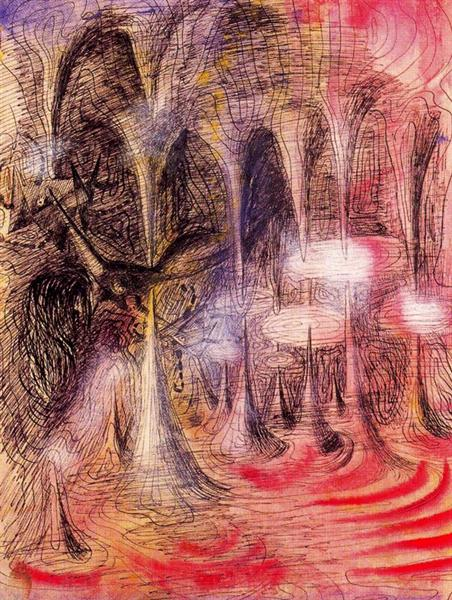
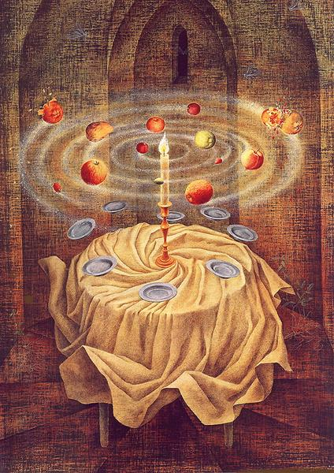
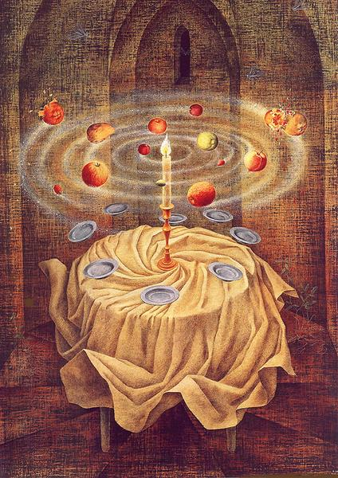
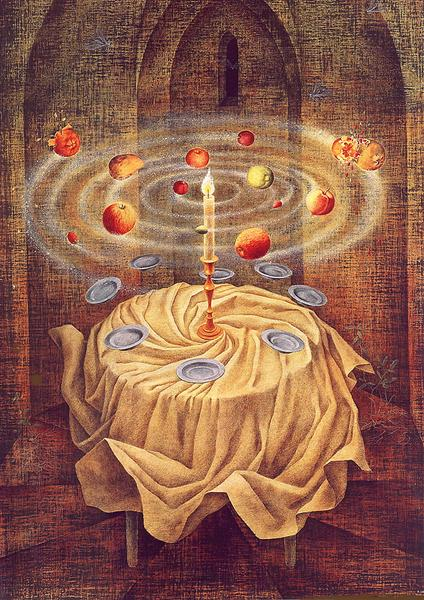
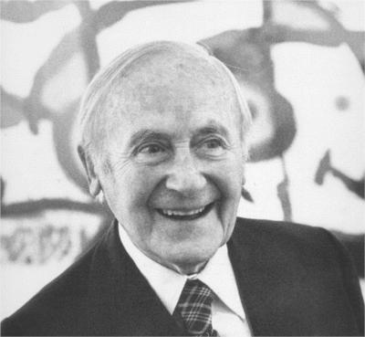

February
Surrealism
About text
Week One
Name: Remedios Varo
Years: 1908, Spain - 1963, Mexico
Nationality: Spanish, Catalan
Associated Movement: Surrealism
Pieces Listed:
- The Souls of the Mountain, 1938
- Magic Grotto, 1942
- My friend Agustín Lazo, 1945
- Garden of Love, 1951
- Still life Reslicitando, 1963

 


Week Two

Name: Joan Miró
Years: 1893, Spain - 1983, Spain
Nationality: Spanish, Catalan
Associated Movements: Surrealism, Cubism, Fauvism, Dada
Pieces Listed:
- Portrait of a Young Girl, 1915
- Prades, the Village, 1917
- The Ear of Grain, 1922-23
- The Tilled Field, 1923
- The Beautiful Bird Revealing the Unknown to a Pair of Lovers, 1941